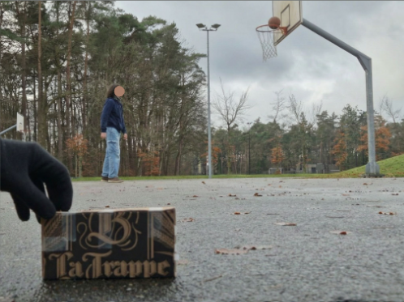
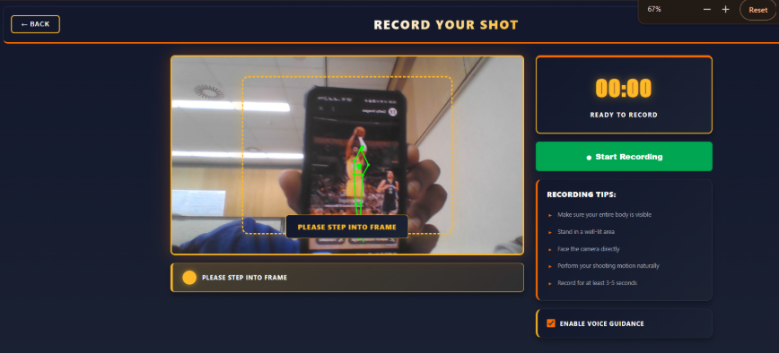
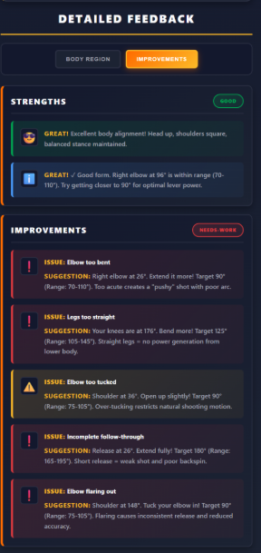
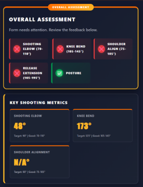

Basketball Shooting Guidance App
A UI/UX concept that helps beginner basketball players practice their shooting technique and receive clear, understandable feedback.

The challenge
Improving a basketball shot can be difficult without a coach nearby. Beginners may struggle to notice small details in their posture and movement, so we explored how digital guidance could make independent practice more useful. Through interviews, demos, lo-fi and hi-fi prototyping, we built an application based on multiple rounds of user-feedback.
The approach
The recording flow guides the player into frame, provides practical setup tips and keeps the most important actions visible. When the head and feet of a player are visible, the camera visible to the player will have a green outline, indicating that the player is in the correct position.
Once the recording starts, the player takes a shot and stops the recording. The following screen will include all the feedback the player needs on his form and this is calculated by using Mediapipe's Pose Estimation and getting the angles of the knees and elbows to check if they are within the suggested limits of a research paper we were referencing.
Whilst testing our lo-fi prototype, we as a team, realised that we missed out a clearly obvious point, that one of our test users had pointed out immediately: You get yourself into position, but then you have to go back and press the start button!
So for our hi-fi prototyping, we shifted more of our focus onto the flow of the product overall, instead of trying to add the most impressive features.


The Tools
For the high fidelity prototype, we built a web application with Vue.js and used Google MediaPipe Pose to track body landmarks and analyse shooting form. Browser tools allowed us to access the camera, record video, display visual feedback, and store recordings locally. We tested the prototypes with participants and used observations and interviews, including some voice recordings, to guide improvements to the design.
The outcome
The final assessment summarises the most important shooting metrics in one place. This project strengthened my understanding of information hierarchy, feedback design and building an experience around a real user need. Interviewing users with a prototype, receiving feedback, then trying to improve the product was my favourite part of this project.
